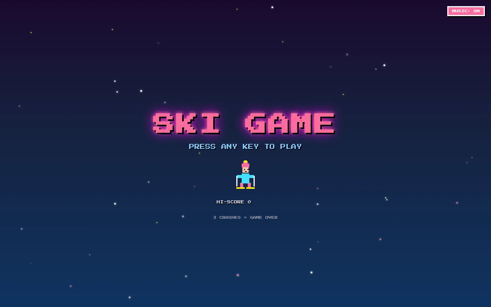
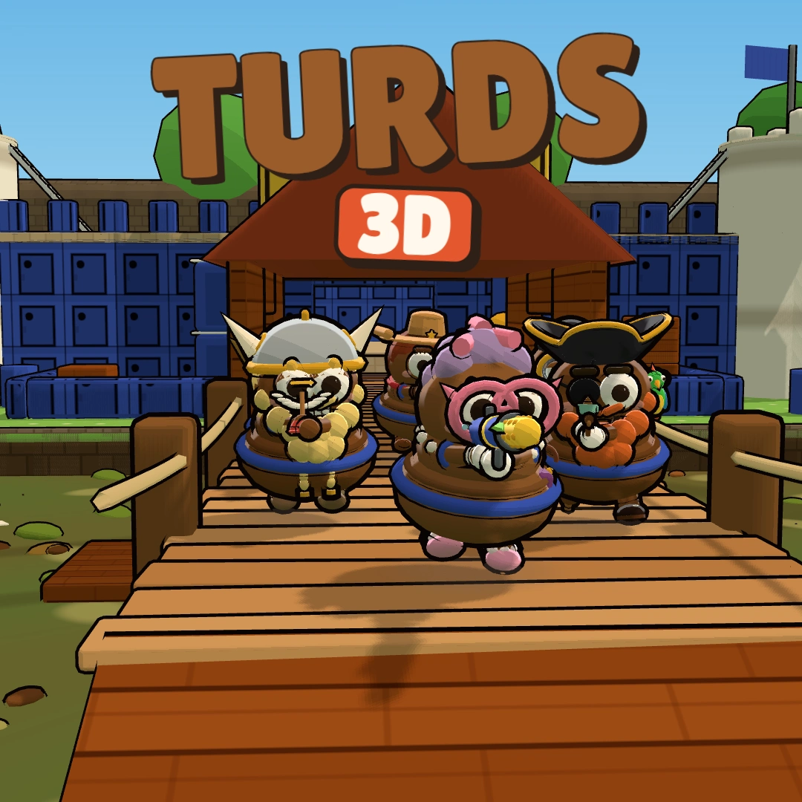
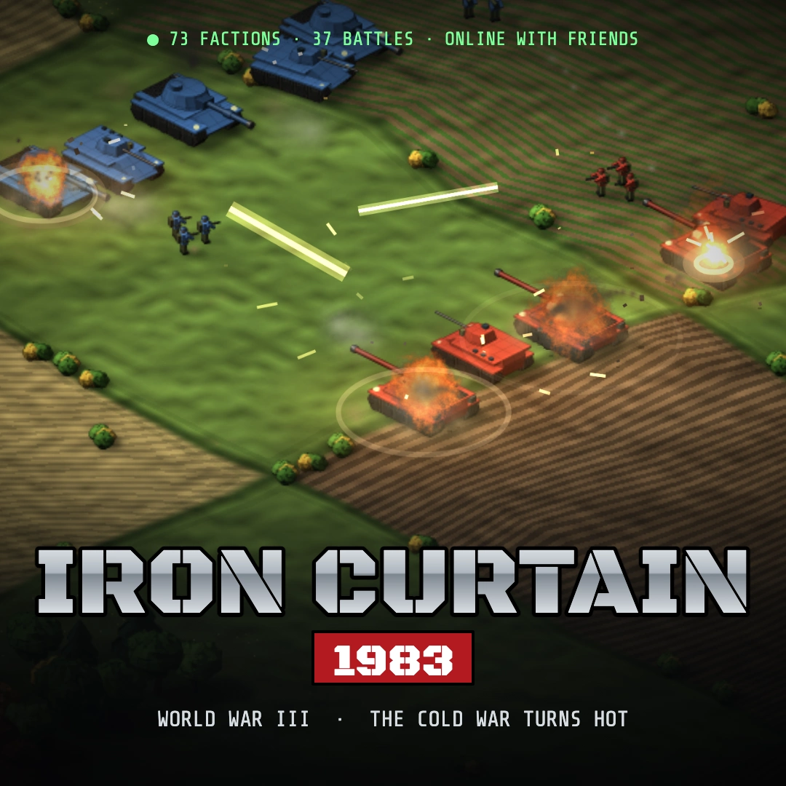

Artillery · Multiplayer
Turds
5.0 / 5 · 3 ratingsA ridiculous arsenal. A very personal rivalry.
Sign in to playA home for independent games and the people making them. Find something to play. Share something you’ve built.
The highest-rated games on StarHermit.
Pick one. Sign in. You’re in.
A ridiculous arsenal. A very personal rivalry.
Sign in to play
02PlayEight drivers. Sixteen tracks. Beautiful chaos.
Sign in to play
04PlayThe same ridiculous universe. A whole new dimension.
Sign in to play
05PlayCommand the Cold War that never happened.
Sign in to playPut your game online, give players a way in, and build the community around it. Start with a GitHub repository, a local build or a dedicated server image.
Sign in, choose Add Game, and bring your project.Connect a repository or upload a build. Your work gets its own place on the platform.
Hosting, matchmaking, player state, leaderboards and achievements, ready to integrate.
Friends, invitations, chat and voice bring your players together around your game.
Build on the infrastructure.
Grow with the community.
Publish browser games from a repository or a local build.
Connect players with matchmaking and multiplayer sessions.
Integrate player state, leaderboards and achievements.
Friends, game invitations, chat and voice in one platform.
Your account connects your games, your progress and your friends. Join a match, send an invitation, or gather in chat and voice.
Join StarHermitChoose your preferred sign-in provider to get started. Play browser games without installing a client.